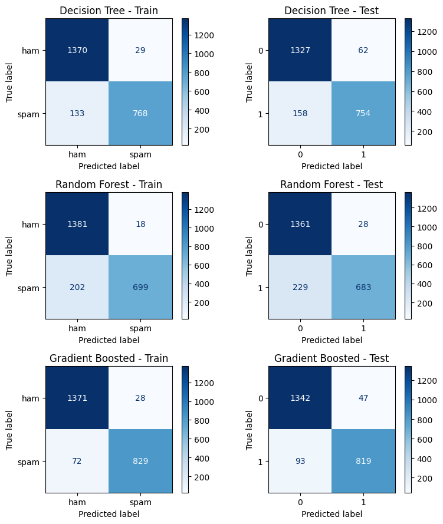

6. Ensemble Methods (finally)#
Ensemble methods combine predictions across multiple models to improve prediction.
weak learners - simple models that predict slightly better than random guessing
strong learners - more complex models that predict significantly better than chance
6.1. Random Forests (RandomForestClassifier)#
A random forest creates numerous trees in parallel (at the same time). Each tree is relatively shallow, sometimes only a single node (called a stump).
To make a prediction, a sample is processed by each tree, each tree makes a prediction, and the majority vote wins. But what makes the trees in the forest different from each other?
In fitting, diversity of trees is created using two methods: feature selection and bagging.
6.1.1. Random feature subsets#
Each tree only gets a subset of the features. For example, in a random forest deciding whether or not you should buy a car, one tree might make a prediction based on [‘reliability’, ‘feul economy’, ‘price’], while another uses [‘top speed’, ‘interior room’, ‘cost to repair’], and another uses [‘resale value’, ‘feul economy’, ‘value of standard tech’] and another…
6.1.2. Bagging (Bootstrap aggregating)#
Bootstrapping is a method for creating new data sets by sampling existing data sets. In bootstrapping, you select samples randomly and allow a sample to be selected multiple times (called sampling with replacement).
Bagging is a method that uses bootstrapping to create different training sets for each tree, and then aggregating the results.
6.1.3. Why it works?#
The idea is that no one tree will be great, but they’ll all make different mistakes. But there’ll be more overlap in correct guesses than in mistakes. So for any given sample, the majority vote is more likely to be correct than any one tree.
6.2. Gradient Boosted Trees#
Whereas Random Forests fit trees in parallel and every tree gets an equal vote, Boosted trees create trees sequentially, each new tree focusing on the shortcomings of the previous. And at the voting stage, some trees get more say than others.
There are many flavors of Boosted trees: AdaBoost, XGBoost, CatBoost
They all work a little differently, but here’s an outline of AdaBoost as an example:
6.2.1. AdaBoost (Adaptive Boosting) ( GradientBoostingClassifier)#
In AdaBoost, a tree comprises only one decision node; this kind of tree is called a stump. In each iteration, a new stump is created that splits the data based on a different condition. As the algorithm iterates, it keeps track of:
Sample Weight - each iteration, the algorithm focuses more on misclassified samples.
A sample that is classified correctly is down-weighted. We get this right, don’t spend more energy on this case.
A sample that is classified incorrectly is up-weighted. We get this wrong, focus on this case.
Tree Influence - how much say a tree will have in the final vote. Trees that do better at classifying get more say.
A tree that is 50% correct gets no say. This tree is just guessing
A tree that is >50% gets a positive vote (0 to infinity). A tree that is 100% correct gets infinite vote! Listen to that tree!
A tree that is <50% gets a negative vote (0 to -infinity). A tree that is 0% correct gets a -infinite vote! Do the opposite of that tree!
The AdaBoost process:
Start with all the samples each counts the same.
Same as in a decision tree, pick a question that splits the data to minimize Gini Impurity.
Sum up sample weights for mis-classified samples and calculate Tree Influence.
Assign new weights to samples, increasing weights on mistakes and decreasing weights on correct classifications.
Create new stump, and repeat 2-5 until classification error is below some threshold you choose.
When you predict, you feed the sample through all the stumps and each votes according to their influence.
6.2.2. Example: Spam email prediction#
!pip install ucimlrepo
Requirement already satisfied: ucimlrepo in /Users/eatai/.pyenv/versions/datascience/lib/python3.13/site-packages (0.0.7)
Requirement already satisfied: pandas>=1.0.0 in /Users/eatai/.pyenv/versions/datascience/lib/python3.13/site-packages (from ucimlrepo) (2.2.3)
Requirement already satisfied: certifi>=2020.12.5 in /Users/eatai/.pyenv/versions/datascience/lib/python3.13/site-packages (from ucimlrepo) (2024.12.14)
Requirement already satisfied: numpy>=1.26.0 in /Users/eatai/.pyenv/versions/datascience/lib/python3.13/site-packages (from pandas>=1.0.0->ucimlrepo) (2.2.1)
Requirement already satisfied: python-dateutil>=2.8.2 in /Users/eatai/.pyenv/versions/datascience/lib/python3.13/site-packages (from pandas>=1.0.0->ucimlrepo) (2.9.0.post0)
Requirement already satisfied: pytz>=2020.1 in /Users/eatai/.pyenv/versions/datascience/lib/python3.13/site-packages (from pandas>=1.0.0->ucimlrepo) (2024.2)
Requirement already satisfied: tzdata>=2022.7 in /Users/eatai/.pyenv/versions/datascience/lib/python3.13/site-packages (from pandas>=1.0.0->ucimlrepo) (2024.2)
Requirement already satisfied: six>=1.5 in /Users/eatai/.pyenv/versions/datascience/lib/python3.13/site-packages (from python-dateutil>=2.8.2->pandas>=1.0.0->ucimlrepo) (1.17.0)
from ucimlrepo import fetch_ucirepo
import pandas as pd
# fetch dataset
spambase = fetch_ucirepo(id=94)
# data (as pandas dataframes)
X = spambase.data.features
Y = spambase.data.targets
# to make y a compatible shape for sklearn models
y = Y['Class']
labels = ['ham', 'spam']
# metadata
print(spambase.metadata)
# variable information
print(spambase.variables)
{'uci_id': 94, 'name': 'Spambase', 'repository_url': 'https://archive.ics.uci.edu/dataset/94/spambase', 'data_url': 'https://archive.ics.uci.edu/static/public/94/data.csv', 'abstract': 'Classifying Email as Spam or Non-Spam', 'area': 'Computer Science', 'tasks': ['Classification'], 'characteristics': ['Multivariate'], 'num_instances': 4601, 'num_features': 57, 'feature_types': ['Integer', 'Real'], 'demographics': [], 'target_col': ['Class'], 'index_col': None, 'has_missing_values': 'no', 'missing_values_symbol': None, 'year_of_dataset_creation': 1999, 'last_updated': 'Mon Aug 28 2023', 'dataset_doi': '10.24432/C53G6X', 'creators': ['Mark Hopkins', 'Erik Reeber', 'George Forman', 'Jaap Suermondt'], 'intro_paper': None, 'additional_info': {'summary': 'The "spam" concept is diverse: advertisements for products/web sites, make money fast schemes, chain letters, pornography...\n\nThe classification task for this dataset is to determine whether a given email is spam or not.\n\t\nOur collection of spam e-mails came from our postmaster and individuals who had filed spam. Our collection of non-spam e-mails came from filed work and personal e-mails, and hence the word \'george\' and the area code \'650\' are indicators of non-spam. These are useful when constructing a personalized spam filter. One would either have to blind such non-spam indicators or get a very wide collection of non-spam to generate a general purpose spam filter.\n\nFor background on spam: Cranor, Lorrie F., LaMacchia, Brian A. Spam!, Communications of the ACM, 41(8):74-83, 1998.\n\nTypical performance is around ~7% misclassification error. False positives (marking good mail as spam) are very undesirable.If we insist on zero false positives in the training/testing set, 20-25% of the spam passed through the filter. See also Hewlett-Packard Internal-only Technical Report. External version forthcoming. ', 'purpose': None, 'funded_by': None, 'instances_represent': 'Emails', 'recommended_data_splits': None, 'sensitive_data': None, 'preprocessing_description': None, 'variable_info': 'The last column of \'spambase.data\' denotes whether the e-mail was considered spam (1) or not (0), i.e. unsolicited commercial e-mail. Most of the attributes indicate whether a particular word or character was frequently occuring in the e-mail. The run-length attributes (55-57) measure the length of sequences of consecutive capital letters. For the statistical measures of each attribute, see the end of this file. Here are the definitions of the attributes:\r\n\r\n48 continuous real [0,100] attributes of type word_freq_WORD \r\n= percentage of words in the e-mail that match WORD, i.e. 100 * (number of times the WORD appears in the e-mail) / total number of words in e-mail. A "word" in this case is any string of alphanumeric characters bounded by non-alphanumeric characters or end-of-string.\r\n\r\n6 continuous real [0,100] attributes of type char_freq_CHAR] \r\n= percentage of characters in the e-mail that match CHAR, i.e. 100 * (number of CHAR occurences) / total characters in e-mail\r\n\r\n1 continuous real [1,...] attribute of type capital_run_length_average \r\n= average length of uninterrupted sequences of capital letters\r\n\r\n1 continuous integer [1,...] attribute of type capital_run_length_longest \r\n= length of longest uninterrupted sequence of capital letters\r\n\r\n1 continuous integer [1,...] attribute of type capital_run_length_total \r\n= sum of length of uninterrupted sequences of capital letters \r\n= total number of capital letters in the e-mail\r\n\r\n1 nominal {0,1} class attribute of type spam\r\n= denotes whether the e-mail was considered spam (1) or not (0), i.e. unsolicited commercial e-mail. \r\n', 'citation': None}}
name role type demographic \
0 word_freq_make Feature Continuous None
1 word_freq_address Feature Continuous None
2 word_freq_all Feature Continuous None
3 word_freq_3d Feature Continuous None
4 word_freq_our Feature Continuous None
5 word_freq_over Feature Continuous None
6 word_freq_remove Feature Continuous None
7 word_freq_internet Feature Continuous None
8 word_freq_order Feature Continuous None
9 word_freq_mail Feature Continuous None
10 word_freq_receive Feature Continuous None
11 word_freq_will Feature Continuous None
12 word_freq_people Feature Continuous None
13 word_freq_report Feature Continuous None
14 word_freq_addresses Feature Continuous None
15 word_freq_free Feature Continuous None
16 word_freq_business Feature Continuous None
17 word_freq_email Feature Continuous None
18 word_freq_you Feature Continuous None
19 word_freq_credit Feature Continuous None
20 word_freq_your Feature Continuous None
21 word_freq_font Feature Continuous None
22 word_freq_000 Feature Continuous None
23 word_freq_money Feature Continuous None
24 word_freq_hp Feature Continuous None
25 word_freq_hpl Feature Continuous None
26 word_freq_george Feature Continuous None
27 word_freq_650 Feature Continuous None
28 word_freq_lab Feature Continuous None
29 word_freq_labs Feature Continuous None
30 word_freq_telnet Feature Continuous None
31 word_freq_857 Feature Continuous None
32 word_freq_data Feature Continuous None
33 word_freq_415 Feature Continuous None
34 word_freq_85 Feature Continuous None
35 word_freq_technology Feature Continuous None
36 word_freq_1999 Feature Continuous None
37 word_freq_parts Feature Continuous None
38 word_freq_pm Feature Continuous None
39 word_freq_direct Feature Continuous None
40 word_freq_cs Feature Continuous None
41 word_freq_meeting Feature Continuous None
42 word_freq_original Feature Continuous None
43 word_freq_project Feature Continuous None
44 word_freq_re Feature Continuous None
45 word_freq_edu Feature Continuous None
46 word_freq_table Feature Continuous None
47 word_freq_conference Feature Continuous None
48 char_freq_; Feature Continuous None
49 char_freq_( Feature Continuous None
50 char_freq_[ Feature Continuous None
51 char_freq_! Feature Continuous None
52 char_freq_$ Feature Continuous None
53 char_freq_# Feature Continuous None
54 capital_run_length_average Feature Continuous None
55 capital_run_length_longest Feature Continuous None
56 capital_run_length_total Feature Continuous None
57 Class Target Binary None
description units missing_values
0 None None no
1 None None no
2 None None no
3 None None no
4 None None no
5 None None no
6 None None no
7 None None no
8 None None no
9 None None no
10 None None no
11 None None no
12 None None no
13 None None no
14 None None no
15 None None no
16 None None no
17 None None no
18 None None no
19 None None no
20 None None no
21 None None no
22 None None no
23 None None no
24 None None no
25 None None no
26 None None no
27 None None no
28 None None no
29 None None no
30 None None no
31 None None no
32 None None no
33 None None no
34 None None no
35 None None no
36 None None no
37 None None no
38 None None no
39 None None no
40 None None no
41 None None no
42 None None no
43 None None no
44 None None no
45 None None no
46 None None no
47 None None no
48 None None no
49 None None no
50 None None no
51 None None no
52 None None no
53 None None no
54 None None no
55 None None no
56 None None no
57 spam (1) or not spam (0) None no
Y.describe()
| Class | |
|---|---|
| count | 4601.000000 |
| mean | 0.394045 |
| std | 0.488698 |
| min | 0.000000 |
| 25% | 0.000000 |
| 50% | 0.000000 |
| 75% | 1.000000 |
| max | 1.000000 |
6.2.3. Example: Palmer Penguins#
# palmer = pd.read_csv('https://gist.githubusercontent.com/slopp/ce3b90b9168f2f921784de84fa445651/raw/4ecf3041f0ed4913e7c230758733948bc561f434/penguins.csv', index_col = 'rowid')
# palmer.dropna(axis = 0, inplace=True)
# palmer.reset_index(drop = True, inplace=True)
# features = ['bill_length_mm', 'bill_depth_mm',
# 'flipper_length_mm', 'body_mass_g']
# target = 'species'
# labels = ['Adelie', 'Chinstrap', 'Gentoo']
# X = palmer[features]
# y = palmer[target]
from sklearn.tree import DecisionTreeClassifier
from sklearn.ensemble import RandomForestClassifier, GradientBoostingClassifier
from sklearn.model_selection import GridSearchCV, train_test_split
# Split data
X_train, X_test, y_train, y_test = train_test_split(X, y, test_size=0.5, random_state=42)
# Decision Tree
dt_params = {'max_depth': [3, 5, 10, None], 'min_samples_split': [2, 5, 10]}
dt_grid = GridSearchCV(DecisionTreeClassifier(random_state=42), dt_params, cv=5, n_jobs=-1)
dt_grid.fit(X_train, y_train)
# Random Forest
rf_params = {'n_estimators': [10, 30, 100], 'max_depth': [1, 2]}
rf_grid = GridSearchCV(RandomForestClassifier(random_state=42), rf_params, cv=5, n_jobs=-1)
rf_grid.fit(X_train, y_train)
# Gradient Boosted Trees
gb_params = {'n_estimators': [10, 30, 100], 'max_depth': [1, 2]}
gb_grid = GridSearchCV(GradientBoostingClassifier(random_state=42), gb_params, cv=5, n_jobs=-1)
gb_grid.fit(X_train, y_train)
# Get the best models
print("Best Decision Tree params:", dt_grid.best_params_)
print("Best Random Forest params:", rf_grid.best_params_)
print("Best Gradient Boosted params:", gb_grid.best_params_)
tree = dt_grid.best_estimator_
forest = rf_grid.best_estimator_
boosted = gb_grid.best_estimator_
Best Decision Tree params: {'max_depth': 5, 'min_samples_split': 2}
Best Random Forest params: {'max_depth': 2, 'n_estimators': 100}
Best Gradient Boosted params: {'max_depth': 2, 'n_estimators': 100}
y_tree_train = tree.predict(X_train)
y_tree_test = tree.predict(X_test)
y_forest_train = forest.predict(X_train)
y_forest_test = forest.predict(X_test)
y_boosted_train = boosted.predict(X_train)
y_boosted_test = boosted.predict(X_test)
from sklearn.metrics import confusion_matrix, ConfusionMatrixDisplay, classification_report
import matplotlib.pyplot as plt
models = [
('Decision Tree', y_tree_train, y_tree_test),
('Random Forest', y_forest_train, y_forest_test),
('Gradient Boosted', y_boosted_train, y_boosted_test)
]
fig, axes = plt.subplots(3, 2, figsize=(8, 9))
for i, (name, y_pred_train, y_pred_test) in enumerate(models):
cm_train = confusion_matrix(y_train, y_pred_train)
cm_test = confusion_matrix(y_test, y_pred_test)
disp_train = ConfusionMatrixDisplay(cm_train, display_labels=labels)
disp_test = ConfusionMatrixDisplay(cm_test)
disp_train.plot(ax=axes[i, 0], cmap='Blues', values_format='d')
axes[i, 0].set_title(f'{name} - Train')
disp_test.plot(ax=axes[i, 1], cmap='Blues', values_format='d')
axes[i, 1].set_title(f'{name} - Test')
plt.tight_layout()

import numpy as np
def display_feature_importance(model):
imps = model.feature_importances_
features = model.feature_names_in_
sort_idx = np.argsort(imps)[::-1]
imps = imps[sort_idx]
features = features[sort_idx]
for k, (feature, imp) in enumerate(zip(features, imps), start = 1):
print(f'{k:>3}. {feature:_<30}{imp:.4f}')
print('\nDECISION TREE\n====================================')
display_feature_importance(tree)
DECISION TREE
====================================
1. char_freq_$___________________0.4686
2. word_freq_remove______________0.2149
3. char_freq_!___________________0.0984
4. word_freq_hp__________________0.0622
5. capital_run_length_total______0.0397
6. word_freq_free________________0.0333
7. word_freq_edu_________________0.0175
8. word_freq_george______________0.0169
9. word_freq_000_________________0.0125
10. capital_run_length_longest____0.0115
11. word_freq_1999________________0.0085
12. word_freq_hpl_________________0.0069
13. word_freq_you_________________0.0045
14. word_freq_over________________0.0024
15. word_freq_mail________________0.0023
16. word_freq_order_______________0.0000
17. word_freq_address_____________0.0000
18. word_freq_money_______________0.0000
19. word_freq_all_________________0.0000
20. word_freq_3d__________________0.0000
21. word_freq_font________________0.0000
22. word_freq_your________________0.0000
23. word_freq_credit______________0.0000
24. word_freq_email_______________0.0000
25. word_freq_business____________0.0000
26. word_freq_our_________________0.0000
27. word_freq_addresses___________0.0000
28. word_freq_report______________0.0000
29. word_freq_internet____________0.0000
30. word_freq_will________________0.0000
31. word_freq_receive_____________0.0000
32. word_freq_people______________0.0000
33. word_freq_lab_________________0.0000
34. word_freq_650_________________0.0000
35. word_freq_labs________________0.0000
36. capital_run_length_average____0.0000
37. char_freq_#___________________0.0000
38. char_freq_[___________________0.0000
39. char_freq_(___________________0.0000
40. char_freq_;___________________0.0000
41. word_freq_conference__________0.0000
42. word_freq_table_______________0.0000
43. word_freq_re__________________0.0000
44. word_freq_project_____________0.0000
45. word_freq_original____________0.0000
46. word_freq_meeting_____________0.0000
47. word_freq_cs__________________0.0000
48. word_freq_direct______________0.0000
49. word_freq_pm__________________0.0000
50. word_freq_parts_______________0.0000
51. word_freq_technology__________0.0000
52. word_freq_85__________________0.0000
53. word_freq_415_________________0.0000
54. word_freq_data________________0.0000
55. word_freq_857_________________0.0000
56. word_freq_telnet______________0.0000
57. word_freq_make________________0.0000
print('\nRANDOM FOREST\n====================================')
display_feature_importance(forest)
RANDOM FOREST
====================================
1. char_freq_$___________________0.1412
2. char_freq_!___________________0.1224
3. word_freq_remove______________0.1150
4. word_freq_free________________0.0709
5. capital_run_length_longest____0.0601
6. word_freq_your________________0.0578
7. capital_run_length_average____0.0521
8. word_freq_money_______________0.0515
9. capital_run_length_total______0.0507
10. word_freq_george______________0.0482
11. word_freq_000_________________0.0414
12. word_freq_hp__________________0.0302
13. word_freq_internet____________0.0232
14. word_freq_hpl_________________0.0213
15. word_freq_our_________________0.0199
16. word_freq_you_________________0.0195
17. word_freq_all_________________0.0141
18. word_freq_1999________________0.0098
19. word_freq_business____________0.0094
20. word_freq_receive_____________0.0072
21. word_freq_over________________0.0065
22. word_freq_make________________0.0051
23. word_freq_address_____________0.0045
24. word_freq_edu_________________0.0028
25. word_freq_will________________0.0026
26. word_freq_order_______________0.0025
27. word_freq_lab_________________0.0024
28. word_freq_re__________________0.0016
29. word_freq_addresses___________0.0016
30. word_freq_credit______________0.0012
31. word_freq_meeting_____________0.0011
32. word_freq_labs________________0.0006
33. char_freq_;___________________0.0005
34. word_freq_415_________________0.0003
35. char_freq_(___________________0.0002
36. word_freq_conference__________0.0002
37. word_freq_original____________0.0002
38. word_freq_mail________________0.0001
39. word_freq_pm__________________0.0001
40. word_freq_technology__________0.0001
41. char_freq_[___________________0.0000
42. word_freq_3d__________________0.0000
43. char_freq_#___________________0.0000
44. word_freq_table_______________0.0000
45. word_freq_85__________________0.0000
46. word_freq_people______________0.0000
47. word_freq_report______________0.0000
48. word_freq_project_____________0.0000
49. word_freq_font________________0.0000
50. word_freq_cs__________________0.0000
51. word_freq_direct______________0.0000
52. word_freq_parts_______________0.0000
53. word_freq_650_________________0.0000
54. word_freq_telnet______________0.0000
55. word_freq_857_________________0.0000
56. word_freq_data________________0.0000
57. word_freq_email_______________0.0000
6.2.4. In class exercise#
The following dataset can be found at UCI ML repository
Based on census information, can we predict whether an individual makes over $50K/yr?
from ucimlrepo import fetch_ucirepo
# fetch dataset
adult = fetch_ucirepo(id=2)
# data (as pandas dataframes)
X = adult.data.features
y = adult.data.targets
X
| age | workclass | fnlwgt | education | education-num | marital-status | occupation | relationship | race | sex | capital-gain | capital-loss | hours-per-week | native-country | |
|---|---|---|---|---|---|---|---|---|---|---|---|---|---|---|
| 0 | 39 | State-gov | 77516 | Bachelors | 13 | Never-married | Adm-clerical | Not-in-family | White | Male | 2174 | 0 | 40 | United-States |
| 1 | 50 | Self-emp-not-inc | 83311 | Bachelors | 13 | Married-civ-spouse | Exec-managerial | Husband | White | Male | 0 | 0 | 13 | United-States |
| 2 | 38 | Private | 215646 | HS-grad | 9 | Divorced | Handlers-cleaners | Not-in-family | White | Male | 0 | 0 | 40 | United-States |
| 3 | 53 | Private | 234721 | 11th | 7 | Married-civ-spouse | Handlers-cleaners | Husband | Black | Male | 0 | 0 | 40 | United-States |
| 4 | 28 | Private | 338409 | Bachelors | 13 | Married-civ-spouse | Prof-specialty | Wife | Black | Female | 0 | 0 | 40 | Cuba |
| ... | ... | ... | ... | ... | ... | ... | ... | ... | ... | ... | ... | ... | ... | ... |
| 48837 | 39 | Private | 215419 | Bachelors | 13 | Divorced | Prof-specialty | Not-in-family | White | Female | 0 | 0 | 36 | United-States |
| 48838 | 64 | NaN | 321403 | HS-grad | 9 | Widowed | NaN | Other-relative | Black | Male | 0 | 0 | 40 | United-States |
| 48839 | 38 | Private | 374983 | Bachelors | 13 | Married-civ-spouse | Prof-specialty | Husband | White | Male | 0 | 0 | 50 | United-States |
| 48840 | 44 | Private | 83891 | Bachelors | 13 | Divorced | Adm-clerical | Own-child | Asian-Pac-Islander | Male | 5455 | 0 | 40 | United-States |
| 48841 | 35 | Self-emp-inc | 182148 | Bachelors | 13 | Married-civ-spouse | Exec-managerial | Husband | White | Male | 0 | 0 | 60 | United-States |
48842 rows × 14 columns